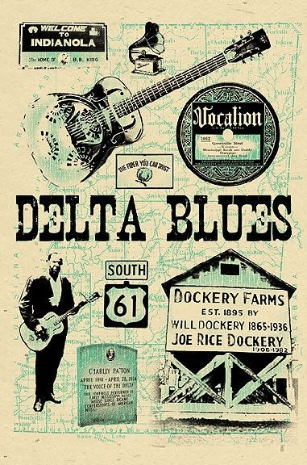

<main>
    <section class="delta conteudo">
        <h2>Delta Blues</h2>
        
        <div class="texto-informativo tipo-blues">
            <p>
                O Blues apresenta subgêneros, e o primeiro deles foi o Delta Blues. Ele se desenvolveu 
                nas décadas de 20 e 30 na região do delta do rio Mississippi, nos Estados Unidos, que se estende 
                de Memphis, Tennessee e a Vicksburg. Caracterizado pelas canções marcadas por repetições de 
                riffs e vozes potentes, o Delta Blues foi fundado por W.C Handy e Gertrude Ma Rainey, que 
                apareceram em Mississipi e são os primeiros artistas do Blues. 
            </p>
            <p>
                Reconhecido como o Blues mais cru, as vozes são gritadas e o violão é tocado com 
                agressividade. Algumas outras características do violão incluem o uso de diferentes afinações 
                abertas, o uso do slide e textura polirrítmica, bem como a “conversa” de chamada e resposta entre 
                o violão e a parte vocal. Além disso, apresenta melodias simples 
                e conta com a presença de riffs repetitivos, Blue notes e símbolos de duplo sentido. 
            </p>
            <p>
                O banjo, violão e a gaita foram os principais instrumentos utilizados pelos músicos do Delta Blues.
                Suas músicas expressavam romances malsucedidos, histórias sobre traições e relatos da 
                vida na estrada. As canções continham sentimento, descrevendo as suas angústias e lamentos. 
            </p>
        </div>
    </section>
</main>